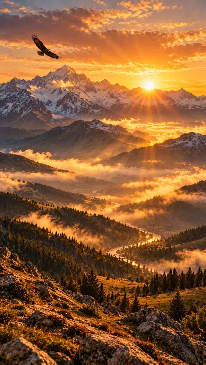

Tog'lar ortidan quyosh
9:16 (tik), 8 s0:00–0:10
✅ Rasm tayyor — Veo'ga shu rasmni yuklang
Klipdagi joyiKirish. Oxiriga sarlavhani o'zim yozaman.
🎬 Veo prompti — 9:16 (tik), 8 s
Slow crane up from the rocks in the foreground toward the mountain peaks, ending on a wide view of the sun. The sun rises slowly over the snowy peaks, its rays grow brighter and spread over the valleys, the morning mist flows slowly between the hills, the river sparkles, the eagle glides across the sky in a slow arc. Keep the landscape exactly as in the image. Vertical 9:16, 8 seconds, cinematic photorealistic film look, warm golden light with deep shadows, gentle film grain, smooth natural motion that fills all 8 seconds. No text, no letters, no captions, no logos, no watermark. No music, ambient sound only.